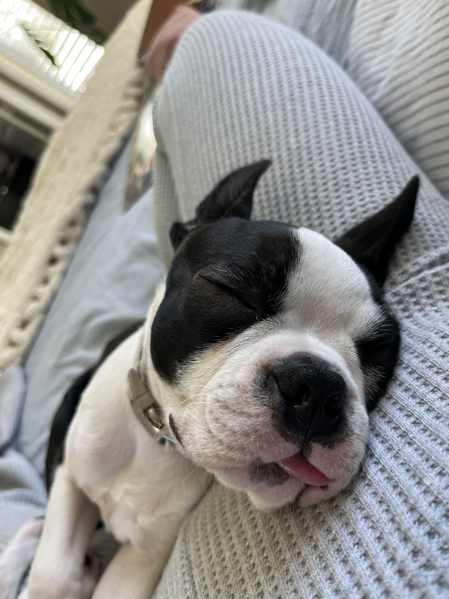
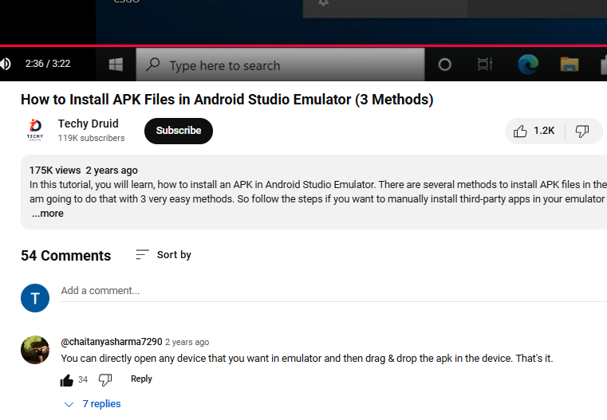
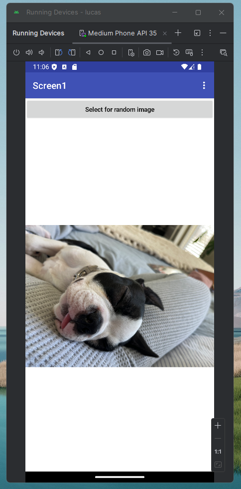

Entry 1: First Post
My name is Tyler Reimer, I chose this course as I had taken a different course with Lucas and needed some more of that in my life. I can often be found online via my GitHub or LinkedIn pages either coding websites for my job or learning from others. In the future I would like to grind my way to become a Network Engineer and look forward to learning from the many failures I encounter.
Right now my main project is my Onboarding Site, which, in its current form, takes an email from our Talent team and spits out a PowerShell script. I copy, paste, and run this text on our identity management server running Active Directory. This greatly speeds up the process that I have to do in order to setup the new users with thier email and shared drive access. If you wanna check out the code it is available on my GitHub page here: OB Site Code.
Entry 2
Intro
For this class I chose to make an app that shows a random image of my dog upon clicking a button. Upon firing up MIT App Inventor, I knew I had to challenge myself to drag some blocks and get a variable in the mix. After some internal discussion about not making a completely useless app, I chose to use 3 whole images of my dog (Phoebe). After some clicks and drags in App Inventor I downloaded Android Studio using coffee shop wifi.
Deception
Upon downloading and installing, I tried to open my .apk as a new project and spin up an emulated device. Except I could not find lucas.apk anywhere. Going to YouTube was my best bet at this point. Brilliantly searching "how to run an apk in android studio", I got exactly what I wanted. 3-minute video tutorial on how to run my newly developed app. I watched the video and followed along. Navigating File Explorer, Opening SPK Manager, Naming a .TXT file in AppData, Copying my .apk to the folder.
Recovery
Spinning up my emulated device once more... pulling up the virtualized menu of this Android device. And it didn't show up on my device. I furiously scrolled down to the comments of this 2-year-old video to find my solution.
Conclusion
Sitting here in the comments was the simplest and most elegant solution I have ever seen. Just drag the file from my computer to the running emulated device. Could it be this simple? Yes, my app works.
Entry 3
Entry 4